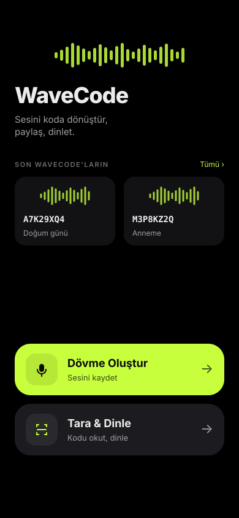
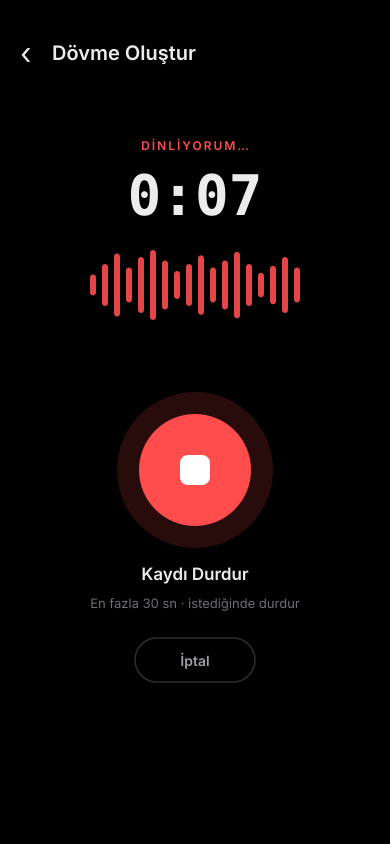
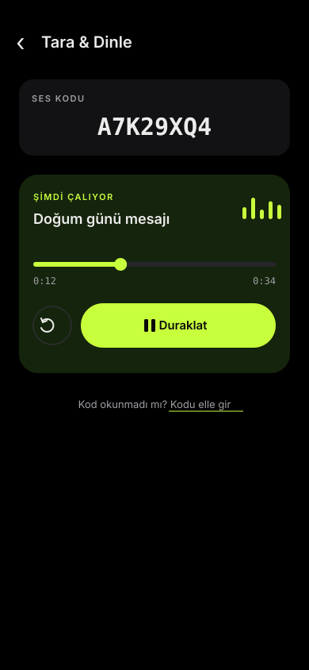

<!doctype html><meta charset=utf-8><title>WaveCode UX mocks</title><style>body{margin:0;background:#0c0c0e;display:flex;gap:28px;flex-wrap:wrap;padding:28px;font-family:Inter,Arial}img{width:300px;border-radius:22px;box-shadow:0 12px 50px #000a}figure{margin:0;color:#9a9aa2;text-align:center;font-size:13px}</style><figure><figcaption>A-home</figcaption></figure><figure><figcaption>B-record</figcaption></figure><figure><figcaption>C-now-playing</figcaption></figure>